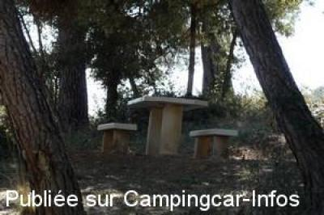
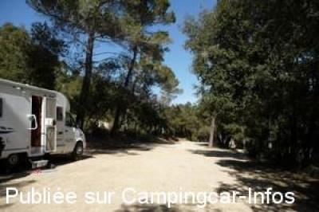

APN = Parking toléré jour/nuit de :
SILLANS LA CASCADE
(N° 101)
Accès/adresse :
Route de Barjols, D560
83690 SILLANS LA CASCADE
83690 SILLANS LA CASCADE
Latitude : (Nord) 43.56839° Décimaux ou 43° 34′ 6′′
Longitude : (Est) 6.18146° Décimaux ou 6° 10′ 53′′
Tarif : Gratuit
Services :

Autres informations :
1 parking ombragé direct avant le sentier pour la cascade
1 autre juste à la sortie sans ombre,

Le 14/03/2012 par louloutte

Le 10/03/2012 par louloutte
de
Créolie06
le 07/07/2015 :
De passage le 04/07/2015.Aucun service,parking gratuit uniquement
De passage le 04/07/2015.Aucun service,parking gratuit uniquement
de
besnard jl 41
le 25/09/2014 :
de passage le 05/09: En bordure de routes mais pas beaucoup de passage. une petite dizaine de place . Belle cascade à 800m.
de passage le 05/09: En bordure de routes mais pas beaucoup de passage. une petite dizaine de place . Belle cascade à 800m.
de
Robert86
le 19/02/2005 :
Le panneau d'avertissement sur les risques de vol refroidit un peu.
Le panneau d'avertissement sur les risques de vol refroidit un peu.